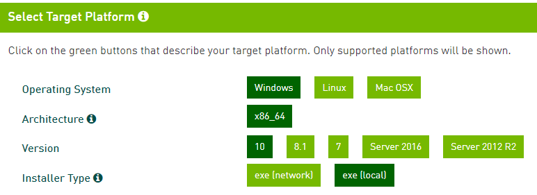
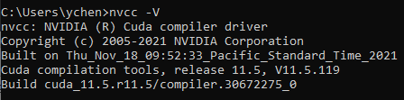
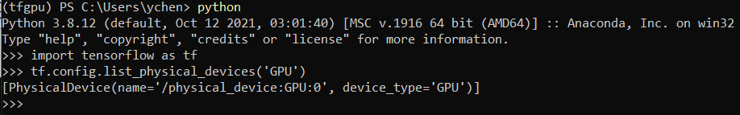
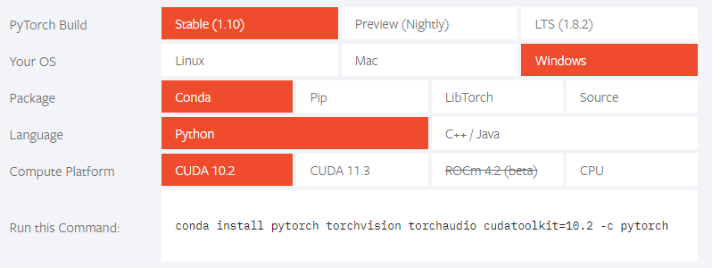
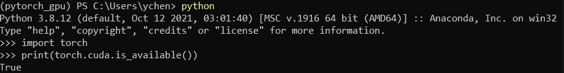
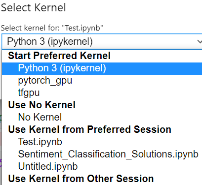
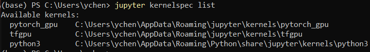

Enable GPU acceleration on Win10 with Notebook
Summary: Records about enabling GPU acceleration on Windows 10 with Jupyter Notebook.
Contents:
- 1. Introduction and basics
- 2. Installing Jupyter lab and setting default directory
- 3. Installing Cuda and Cudnn
- 4. Creating tensorflow-gpu virtual environment and testing
- 5. Creating pytorch-gpu virtual environment and testing
- 6. Adding virtual env to notebook
- 7. NVDashboard
- Reference:
1. Introduction and basics
Both Tensorflow and PyTorch provide GPU acceleration option, the Google Colab and Kaggle Notebook also provide GPU/TPU acceleration options.
This blog is about my recent configure about GPU acceleration on Windows 10 desktop.
Suppose Anaconda has been intalled.
The common commands about creating virtual environment is following:
#the below commands run in anaconda prompt
# list virtual environment
conda env list
# create new virtual env,
conda create -n env_names package_names # conda create -n tfgpu python=3.8
# activate virtual env
conda activate tfgpu
# deactivate current environment
conda deactivate
# delete virtual env
conda env remove -n env_name
Hardware:
- Nvidia GeForce RTX 2060 super
- Windows 10
2. Installing Jupyter lab and setting default directory
-
Installing Jupyter lab.
pip install jupyterlab -
Generating config file
jupyter_notebook_config.py:jupyter notebook --generate-configon Window, the file will be in:
C:\Users\username\.jupyter/jupyter_notebook_config.pyon Ubuntu, the file will be in:
~/.jupyter/jupyter_notebook_config.py -
Setting default start directory
on Windows:
c.NotebookApp.notebook_dir = u'D:\\OneDriveFolder\\Notebook_OneDrive'on Ubuntu:
c.NotebookApp.notebook_dir = '/home/ycheng/Documents/Notebook'
3. Installing Cuda and Cudnn
3.1 Installing Cuda
Download Cuda.

Version: cuda_11.5.1_496.13_windows.
Install it with default settings.
3.2 Installing Cudnn
Login or Create account and download Cudnn
Version: cudnn-windows-x86_64-8.3.1.22_cuda11.5-archive.
Unzip the file and place the file to C:\Program Files\NVIDIA GPU Computing Toolkit\CUDA\v11.5.
3.3 Adding directory to environment path
When installing Cuda, some directory will be added to path automatically, some are not.
C:\Program Files\NVIDIA GPU Computing Toolkit\CUDA\v11.5
C:\Program Files\NVIDIA GPU Computing Toolkit\CUDA\v11.5\libnvvp
C:\Program Files\NVIDIA Corporation\Nsight Compute 2021.3.1\
C:\Program Files\NVIDIA GPU Computing Toolkit\CUDA\v11.5\extras\CUPTI\lib64
C:\Program Files\NVIDIA GPU Computing Toolkit\CUDA\v11.5\cudnn-windows-x86_64-8.3.1.22_cuda11.5-archive\bin
3.4 Check if it’s installed successfully
Open command window and type: nvcc --V

The above figure means Cuda and Cudnn have been installed successfully.
4. Creating tensorflow-gpu virtual environment and testing
-
Creating virtual env:
conda create -n tfgpu python=3.8 -
Activate tfgpu
conda activate tfgpu -
Installing
tensorflow-gpupip install tensorflow-gpu -
Activating python and testing
import tensorflow as tf tf.config.list_physical_devices('GPU')
5. Creating pytorch-gpu virtual environment and testing
-
Creating virtual env:
conda create -n pytorch_gpu python=3.8 -
Activate tfgpu
conda activate pytorch_gpu -
Installing
pytorch, torchvision, torchaudio, cudatoolkitconda install pytorch torchvision torchaudio cudatoolkit=10.2 -c pytorch
Note that the cuda version 10.2 was selected, because cuda 11.5 is not available, which could be a problem.
-
Activating python and testing
import torch print(torch.cuda.is_available())
6. Adding virtual env to notebook
-
Activate
tfgpuenvironmentconda activate tfgpu -
Installing
ipykernelpip install --user ipykernel -
Adding virtual env to notebook
python -m ipykernel install --user --name=tfgpu #same for pytorch_gpu python -m ipykernel install --user --name=pytorch_gpuNow the new virtual env will be available in notebook

-
List the virtual env in notebook
jupyter kernelspec listNote: since jupyter hasn’t been installed in new virtual env, I run above command under
baseenvironment.
-
Removing virutal env from notebook
jupyter kernelspec uninstall env_name
7. NVDashboard
https://developer.nvidia.com/blog/gpu-dashboards-in-jupyter-lab/